| TOP | weblog | TIPS | Works | リンク |
| 2012-10-27 SoundFontとVSTiを同時に鳴らせて音源の要らないmidiプレーヤー 「SynthFont」 面倒な設定無しで「SoundFont」と「VSTi」を同時に鳴らせちゃう「SynthFont」。 いろんなサイトでさんざん解説されていますので概要だけ。 「SoundFont」でピアノを鳴らし、VSTiでリバーブをかけます、もちろん「VSTi」でピアノを鳴らしVSTiでリバーブをかけることもできます。 「SynthFont」の特徴 先に書いたけどなんも設定しないてSoundFontとVSTiを両方鳴らせっちゃう。 midi再生音をリダイレクトでuavやmp3に出力出来る、しかもwavvやmp3が選べて、時短出力機能がある。 これは珍しい機能で、初めて見ました、ありがたい機能です。 GM,GS以外のSoundFontを選んでいるとリバーブとコーラスのイベントを（あえて？）無視する。 簡単ですが使い方。 １．「SoundFont」の指定 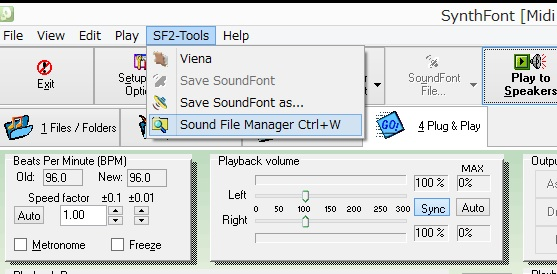 [Sound File Mamager]をクリックしてください。 途中で表示されるメッセージボックスは読めばわかるので省略します。 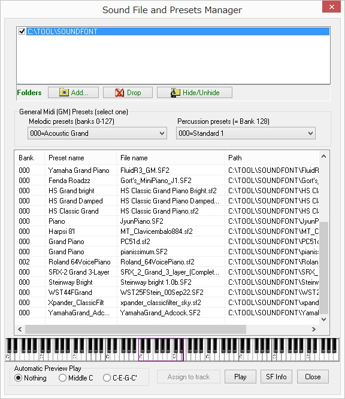 [add]をクリックしてSoundFontファイルが格納されているフォルダを指定してください。 僕の場合は「C:\TOOL\SOUNDFONT」に全部ファイルを突っ込んでいるので上のような状態になります。 ２．VSTi（リバーブ）の指定 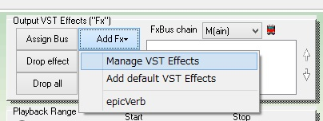 [Add Fx] [Manage VST Effects] をクリックすると[Manaage]ダイアログが開くので[add]ボタンでVSTの入っているフォルダーを指定してください。 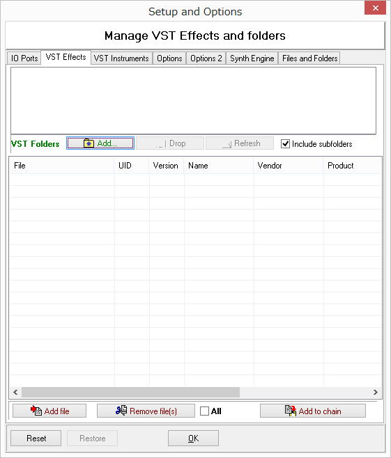 僕の場合「C:\TOOL\SOUNDFONT\VSTi_Effecter」にあるのでそれを指定します。 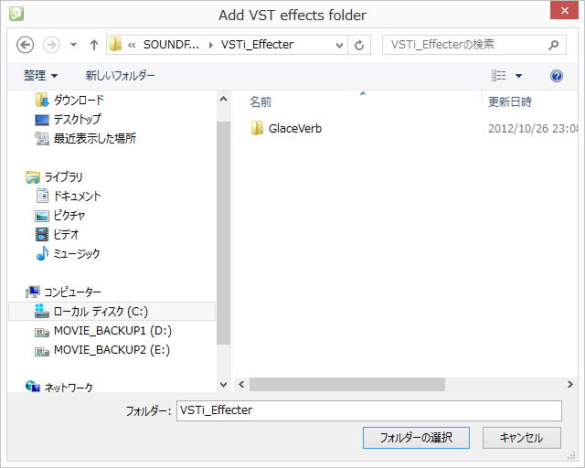 読めばわかるよね、[Yes]をクリック。 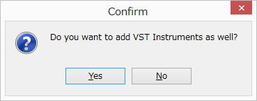 で、使いたいVSTをShiftキーを押しながら複数選択して[all]にチェックを入れて[add to chain] [OK]を押すとメインウィンドウにエフェクターがついかされます。 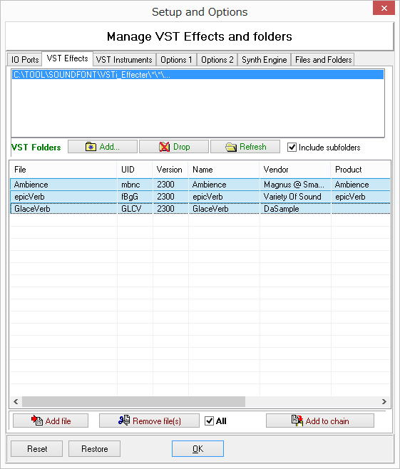 チェックが入っているエフェクターが有効になるのですが、こいつらは全部リバーブなので、まあ、普通はどれか一つだけ選択します。 名前をダブルクリックするとコントロールのダイアログが表示されます。 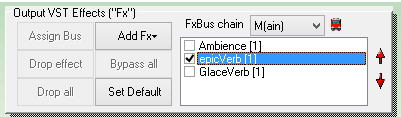 ３．ＶＳＴｉのリバーブ ＭＩＤＩのリバーブよりオーディオ信号にリバーブをかけるので、圧倒的に音がよく、各パラメータも自由に設定できる。 プリセットが多く用意されているものもあり便利。 椎津の師匠みたいにこのへんの事情に詳しい方はおそらくお気に入りのリバーブとオリジナルのプリセットを持っているはず、今度教えていただこうと思います。 で、下のYouTubeはpiano1001先生演奏のショパン「英雄」でVSTiのリバーブを色々と試してみました。 使用したのは[epicVerb」というリバーブです。 piano1001先生演奏のショパン「「英雄」 先生がすぐそこで演奏しているように聞こえるリバーブもあるよ。 パネルのデザインもかっこいい。 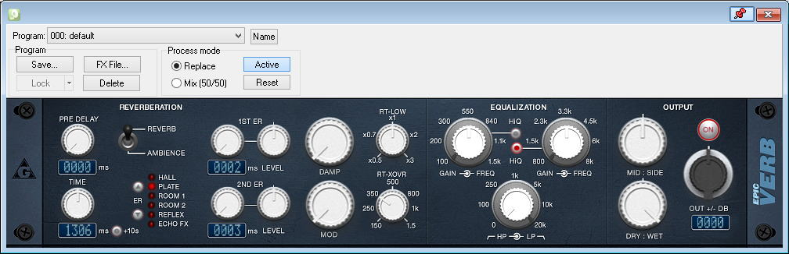 あとは、こんなのがあります。 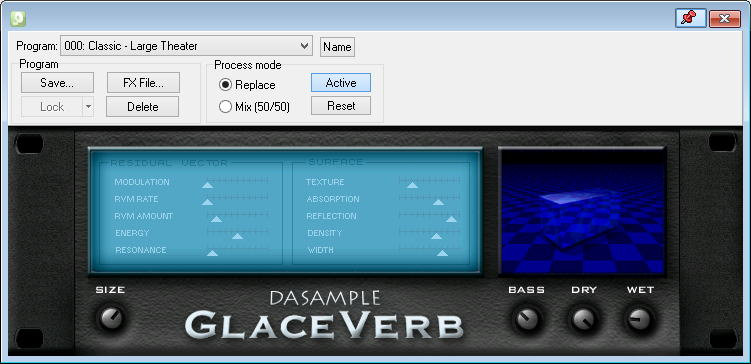 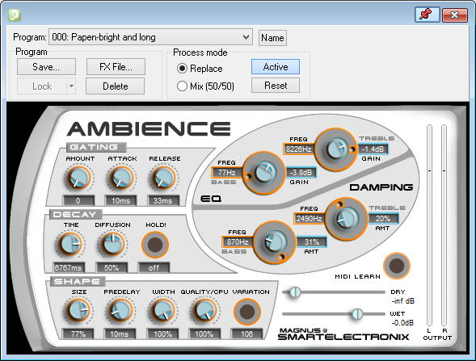 以下が僕の所有するピアノのＳｏｕｎｄＦｏｎｔです。 やみくもに、片っ端からダウンロードしたのです素性もわかっていません、数字はファイルサイズ（MB）。 興味があればファイル名から情報ゲットしてみてください。 結局は好みになります。 僕は、これだけ持っていても、結局使うのは「clavinovapiano1v2.0.sf2」か「splendid_136.sf2」のどっちか。 残念ながら「clavinovapiano1v2.0.sf2」は入手不可見たいです、いい音なのにもったいないね。
|